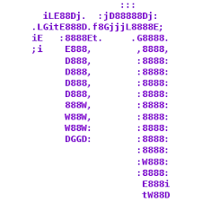

GNU nano is a text editor for Unix-like computing systems or operating environments using a command line interface. It emulates the Pico text editor, part of the Pine email client, and also provides additional functionality.
GNU nano implements several features that Pico lacks, including syntax highlighting, line numbers, regular expression search and replace, line-by-line scrolling, multiple buffers, indenting groups of lines, rebindable key support, and the undoing and redoing of edit changes.